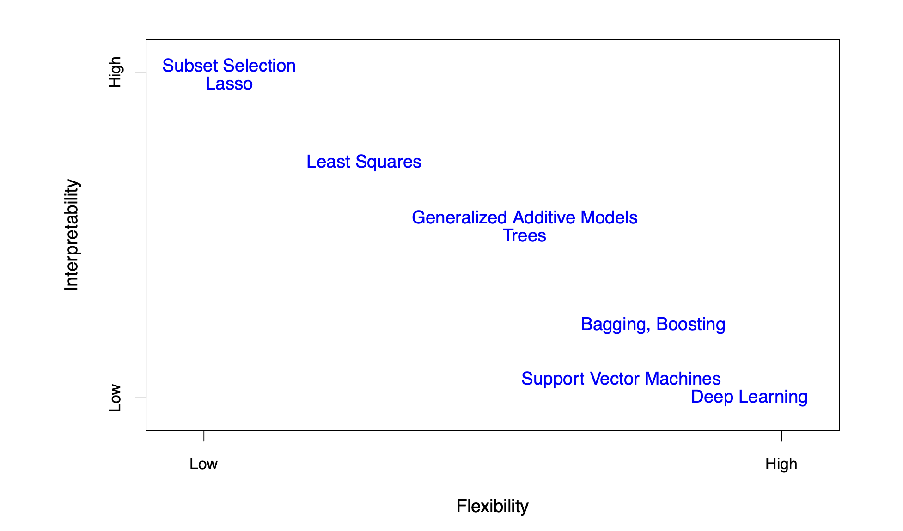
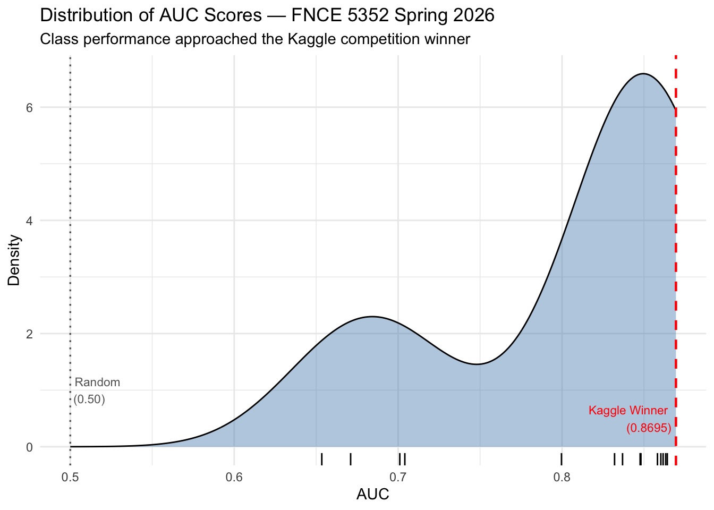
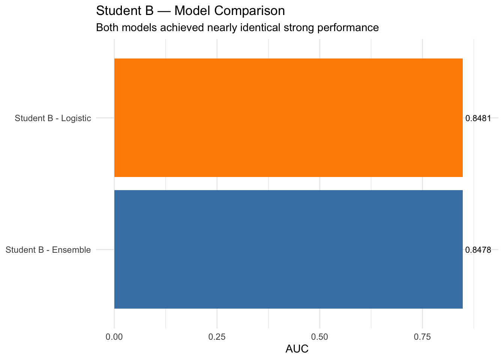

Eight students submitted predictions for the Consumer Credit project. All submitted the correct number of predictions (37,500 records). Two students submitted multiple model variants (one with six models, another with two), all of which are scored below.
This document summarizes the AUC scores for all submissions and includes an analysis of the distribution of results. Student identities have been anonymized.
Key Highlights
Outstanding Class Performance: - The class top score of 0.8642 came within 99% of the original Kaggle competition winner (0.8695) - Top 5 students all scored above 0.84 AUC — an impressive concentration of strong models - The top 3 submissions were separated by only 0.003 AUC points — extremely competitive!
Model Diversity: - XGBoost emerged as the clear winner, achieving the highest AUC - Multi-model submissions revealed significant algorithm differences (0.21 AUC spread) - Students used R and Python; both languages produced top-tier results

Figure 2.7 from An Introduction to Statistical Learning (James et al.) — the flexibility/interpretability tradeoff across model classes.
It is unsurprising that XGBoost claimed the top spot: as shown above, it sits on the low interpretability / high flexibility end of the spectrum, giving it the expressive power needed to capture complex, nonlinear relationships in credit risk data.
Benchmarks for Context: - Random model: ~0.50 AUC - In-class Age-only logistic model: ~0.64 AUC - Class mean (best per student): 0.8456 - Original Kaggle winner: 0.8695 AUC
# A tibble: 15 × 2
label AUC
<chr> <dbl>
1 Student A - XGBoost 0.864
2 Student F 0.863
3 Student G 0.862
4 Professor McDonald 0.860
5 Student C 0.858
6 Student B - Logistic 0.848
7 Student B - Ensemble 0.848
8 Student A - XGBoost Final 0.848
9 Student E 0.837
10 Student H 0.832
11 Student D 0.800
12 Student A - Recipe 4 0.704
13 Student A - LASSO Clean 0.701
14 Student A - Random Forest 0.671
15 Student A - PCA LASSO 0.653
Distribution of Scores
ggplot(filter(submissions, AUC >0), aes(x = AUC)) +geom_density(fill ="steelblue", alpha =0.4) +geom_rug() +geom_vline(xintercept =0.8695, linetype ="dashed", color ="red", linewidth =0.8) +annotate("text", x =0.8695, y =0.5, label ="Kaggle Winner\n(0.8695)", hjust =1.1, color ="red", size =3) +geom_vline(xintercept =0.50, linetype ="dotted", color ="gray40", linewidth =0.6) +annotate("text", x =0.50, y =1, label ="Random\n(0.50)", hjust =-0.1, color ="gray40", size =3) +labs(title ="Distribution of AUC Scores — FNCE 5352 Spring 2026",subtitle ="Class performance approached the Kaggle competition winner",x ="AUC",y ="Density" ) +theme_minimal()

Performance Insights
Class Statistics:
Top Score: 0.8642 — 99.4% of Kaggle winner!
Mean Score (best per student): 0.842
Top 5 students all exceeded 0.84 AUC
Range: 0.6534 to 0.8642 (spread: 0.21)
What This Means:
The class demonstrated strong mastery of predictive modeling. The top submission came remarkably close to the Kaggle competition winner, which represents the best model from thousands of global competitors. The tight clustering of top scores indicates consistent high-quality work across multiple students.
The wide spread between best and worst models from Student A (0.65 to 0.86) highlights a critical lesson: algorithm selection and hyperparameter tuning matter enormously. XGBoost with proper tuning dramatically outperformed simpler methods like PCA+LASSO.
Student A — Model Comparison
One student submitted six model variants, demonstrating exceptional effort and systematic model comparison. The results reveal important insights about algorithm selection and hyperparameter tuning.
# A tibble: 2 × 3
label AUC best
<chr> <dbl> <lgl>
1 Student B - Logistic 0.848 TRUE
2 Student B - Ensemble 0.848 FALSE
ggplot(student_b, aes(x =reorder(label, AUC), y = AUC, fill = best)) +geom_col() +geom_text(aes(label = AUC), hjust =-0.1, size =3) +scale_fill_manual(values =c("FALSE"="steelblue", "TRUE"="darkorange"), guide ="none") +coord_flip() +ylim(0, max(student_b$AUC) *1.05) +labs(title ="Student B — Model Comparison",subtitle ="Both models achieved nearly identical strong performance",x =NULL, y ="AUC" ) +theme_minimal()

Key Takeaway: Both models scored within 0.0003 AUC of each other (0.8478 vs 0.8481). This tight clustering suggests well-tuned models with similar underlying predictive power, despite different algorithmic approaches.
An AUC of 0.50 represents a completely random model. During class we built a simple logistic model using only the Age column and achieved an AUC of approximately 63.8%. The winning score in the original Kaggle competition was 0.8695.